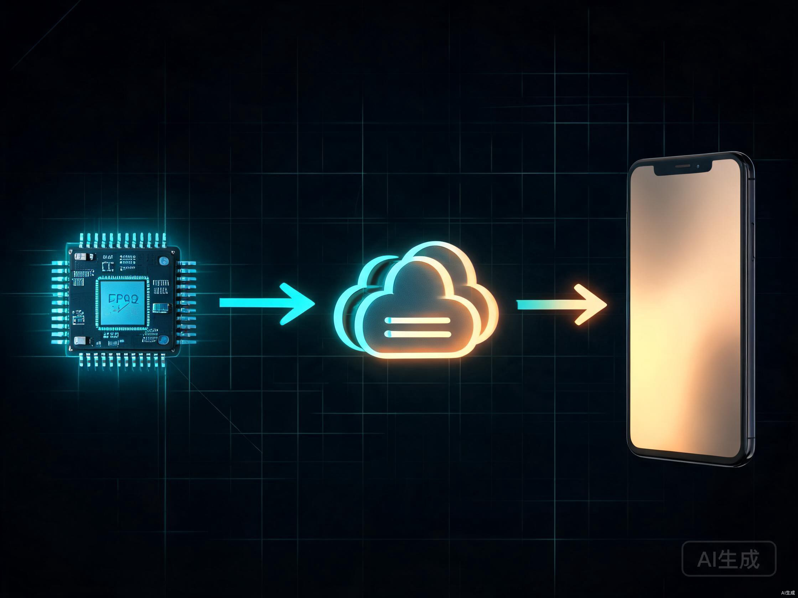

小智（xiaozhi.me）是一个开源的 AI 语音助手平台，原本面向 ESP32 硬件设备设计。不管是 Web、Android、iOS 还是鸿蒙 App，只要想让用户通过语音自然地创建和管理任务，都可以接入小智平台获得 LLM 对话和 TTS 语音播报能力。但小智的设备认证体系是为 ESP32 硬件设计的，App 要接入，得先解决「怎么伪装成一台 ESP32 设备」的问题。
本文以 TickClear 项目（一款跨平台待办事项应用）的接入实践为参照，完整拆解从设备激活、WebSocket 通信、MCP 工具调用到 Opus 音频编解码的全链路实现。所有代码用伪代码说明，不绑定特定语言或框架，Web/Android/iOS/鸿蒙开发者都能直接参考。
一、项目背景与架构概览
TickClear 的核心功能是任务管理，语音助手是其中一个重要模块。用户说出「明天下午三点提醒我开会」，小智服务端的 LLM 解析意图后通过 MCP 协议回调 App 的 create_task 工具，任务就自动创建好了。整个过程对用户来说就是一句话的事。
架构上不限定技术栈。无论你用 React/Vue 做 Web 端，Kotlin/Swift/ArkTS 做移动端，核心模块的职责划分是一样的：
传输层采用策略模式：Transport 接口定义了 connect、sendText、sendAudio、disconnect 等方法，TransportRouter 作为门面根据设置在 Mock 和 Real 之间切换。上层只持有门面，不感知当前模式，切换模式时代码不需要改动。
不同平台的 WebSocket 和音频 API 对照：
| 能力 | Web | Android | iOS | 鸿蒙 |
|---|---|---|---|---|
| WebSocket | 原生 WebSocket API | OkHttp WebSocket | URLSessionWebSocketTask | @ohos.net.websocket |
| Opus 编解码 | Web Audio API + wasm | MediaCodec | AudioToolbox / AVAudioEngine | AudioCapturer / API |
| 安全存储 | localStorage / IndexedDB | EncryptedSharedPreferences | Keychain | @ohos.security.huks |
| HTTP 请求 | fetch / axios | OkHttp | URLSession | @ohos.net.http |
二、小智平台协议体系
小智平台的通信协议建立在 WebSocket 之上，包含三层：连接层的 hello 握手、对话层的 listen/stt/llm/tts 消息流、工具层的 MCP JSON-RPC 2.0 协商。理解这三层是接入小智的基础，与客户端平台无关。
2.1 WebSocket 连接与 hello 握手
小智的 WebSocket 端点固定为 wss://api.tenclass.net/xiaozhi/v1/。连接建立后，客户端必须先发 hello，服务端收到后校验设备身份并初始化 TTS/ASR 组件，完成后回发 hello 携带 session_id。这个顺序很关键——早期实现错误地等待服务端先发 hello，导致握手永远不完成。
这里有一个容易踩的坑：features.mcp=true 是 v1.6+ 协议的必填字段。漏发这个字段，服务端在 hello 解析阶段直接关闭连接，UI 表现为「连接中」几秒后收到断开回调，没有任何报错信息。官方 ESP32 固件源码的 GetHelloMessage() 函数明确包含 cJSON_AddBoolToObject(features, "mcp", true)。
设备认证信息走 HTTP 头，不在 hello JSON 里：
| HTTP 头 | 用途 | 来源 |
|---|---|---|
| Device-Id | 设备 MAC 地址，服务端据此识别设备 | OTA 激活时生成或用户输入 |
| Client-Id | 客户端唯一标识（UUID） | 首次启动自动生成 |
| Authorization | Bearer token（可选） | OTA 下发或用户手动填写 |
| Protocol-Version | 协议版本，固定为 1 | 硬编码 |
有一个细节值得注意：Device-Id 对大小写敏感。xiaozhi.me 服务端要求 MAC 地址以小写格式发送（如 e8:06:90:98:6c:d4），大写会被静默拒绝，连接以 close code=1005 关闭。代码中统一转为小写处理。
2.2 对话消息流
握手完成后，客户端通过 listen 帧提交用户输入，服务端处理后依次返回 stt（语音识别结果）、llm（大模型回复文本）、tts（语音合成音频）消息。文本输入的模式比较特殊：
state 字段的值是另一个协议坑。旧实现用 state="stop" 携带文本，服务端静默忽略，表现为「连接正常但发消息没回复」。改为 state="detect" 后整条 STT→LLM→TTS 对话链才正常触发。两帧之间加 50ms 延迟，模拟真实「说完一段话」的时序，避免服务端把两条消息压成一条。
三、ESP32 设备模拟与两步激活
小智平台面向 ESP32 硬件设计，设备认证体系包含 MAC 地址、Client-Id、序列号三件套，以及一个 OTA 注册流程。不管什么平台的 App 要接入，得把这些全部模拟出来。
3.1 设备标识生成
设备模拟器负责生成和持久化设备身份。MAC 地址采用 LAA（Locally Administered Address）格式，第一字节的 bit1 置位、bit0 清零，形如 02:xx:xx:xx:xx:xx，用密码学安全随机数生成避免与真实网卡撞车。Client-Id 就是随机 UUID。序列号格式与 py-xiaozhi（官方云已验证的 Python 模拟客户端）保持一致：SN-{MD5(mac)[:8]大写}-{mac去冒号小写}。
3.2 两步激活流程
设备身份准备好后，需要走 OTA 激活流程让服务端认识这台「设备」。接入实践对齐了 py-xiaozhi 的两步激活协议：
Step 1 的请求体只包含 application 和 board 两个字段，绝不带 serial_number。这是 py-xiaozhi 源码实证的结论：如果在 OTA 阶段就带 serial，官方云会按「烧录序列号」做 license 绑定校验，自造的 serial 没有对应 license，Step 2 会直接 404 报「License not found」。
Step 2 的请求体用外层 Payload 包裹，包含 algorithm、serial_number、challenge、hmac 四个字段。HMAC-SHA256 的 key 用 sha256("deviceId|serialNumber") 确定性派生——服务端不验签，只在首次激活时记录。轮询最多 60 次（5 分钟），给用户足够时间到官网输码。
还有一个关键认知：官网「用验证码添加设备」校验的 serial_number 只来自 Step 2 请求体里提交的值，OTA 注册体里的 serial 不被采信。所以轮询必须在用户输码期间保持在线，否则官网绑定时报 SERIAL_NUMBER_REQUIRED。

固件版本号也有讲究。官方 xiaozhi.me 对固件版本有硬性门禁 不低于 v1.6.1，低于此版本在 hello 握手后被服务端静默关闭。代码中模拟为 v2.4.0，既满足门禁也贴近当前真实固件版本。
四、WebSocket 传输层深度实现
WebSocket 传输层是整个接入的核心，处理连接建立、hello 握手、消息收发、Opus 二进制帧传输和 MCP 协商。不同平台的 WebSocket API 接口不同，但核心逻辑完全一致。
4.1 连接建立与请求头构造
每次建立连接时，重新读取 endpoint、token 和设备标识，确保用户在设置页更新配置后无需重启应用。端点地址做了归一化处理：空值和历史错误主机 wss://api.xiaozhi.me/ws 都会自动修正为 wss://api.tenclass.net/xiaozhi/v1/。
WebSocket 客户端配置 15 秒的心跳间隔（ping/pong），这个值从最初的 20 秒缩短而来。原因是小智官方云在对话链结束（LLM/TTS 收尾后一段时间无活动）后约 30 到 60 秒会主动关闭连接。更短的 ping 间隔让 NAT 和反向代理的 idle timeout 在对话链关闭前被持续抑制，避免对话间隙掉线。
4.2 握手超时守卫
小智官方服务要求设备先在 xiaozhi.me 控制台绑定。未绑定或绑定失效时，服务端不响应 hello，连接会无限「连接中」且毫无报错。为了不让用户干等，代码实现了 25 秒握手超时守卫：
超时时间从最初的 10 秒提到 25 秒，原因是服务端源码显示收到 hello 后会异步调用 get_private_config_from_api 校验设备，并启动 _initialize_components 加载 TTS/ASR 模型（默认 FunASR/EdgeTTS），等所有组件就绪才会发 welcome。给服务端留足初始化时间，避免误判「被拒」。
4.3 服务端消息处理
消息处理函数按 type 字段分发处理服务端消息：
| 消息类型 | 触发时机 | 处理逻辑 |
|---|---|---|
| hello | 握手完成 | 提取 session_id 和 audio_params，重连计数清零，广播 Connected 事件 |
| stt | 语音识别结果 | 提取 text 字段，广播 SttText 事件供 UI 显示「用户说了什么」 |
| llm | 大模型回复 | 剥离多模态资源 token（@image#xxx），广播 LlmText 事件 |
| tts | 语音合成 | sentence_start 携带文本用于显示，start 携带采样率用于初始化播放器，stop 释放播放器 |
| mcp | 工具调用 | 解析 JSON-RPC 2.0 信封，分发到 initialize/tools/list/tools/call 处理器 |
| goodbye/abort | 服务端关闭 | 清理状态，广播 Disconnected 事件 |
TTS 的二进制 Opus 音频帧通过 WebSocket 二进制消息回调接收，解码后送入音频播放器播放。断开过程中（连接已标记为关闭）排队的帧会被跳过，避免触碰已释放的编解码器或播放器。
五、MCP 工具调用协议
MCP（Model Context Protocol）是小智 v1.6+ 引入的工具调用协议，基于 JSON-RPC 2.0。服务端在 hello 握手成功后，会先发 initialize 请求做协议协商，客户端必须正确响应才能进入正常对话流程。
5.1 协议协商时序
这里有一个曾经导致「25 秒后服务端关连接」的坑：旧实现只读 root["tool"] 字段，遇到 {"method":"initialize"} 的 MCP 握手消息就静默丢弃。服务端等 25 秒收不到 initialize 响应，整体超时关闭。修复方案是识别 payload.method 字段做分支处理。
5.2 initialize 响应
收到 initialize 请求后，客户端回显服务端给的 protocolVersion，上报空的 capabilities（不主动启用 vision 等服务端能力），以及 clientInfo 标识自己：
notifications/initialized 是服务端的「已就绪」广播，按 JSON-RPC 通知语义不需要回执。
5.3 tools/list 与 tools/call
tools/list 要求返回工具定义数组。MCP 规范要求 result.tools 是 JSON 数组，旧实现误用对象导致服务端解析失败。以下注册了一个 create_task 工具：
当用户说「明天下午三点提醒我开会」时，服务端 LLM 解析意图后发 tools/call 请求，params.name="create_task"，params.arguments 包含解析出的标题、日期、分钟数等。工具处理函数先构建草稿任务（不落库），用户在确认界面点击确认后才真正写入数据库。回执格式遵循 MCP 标准：result.content 是 JSON 数组，每个元素含 type 和 text 字段。
六、Opus 音频编解码
小智平台的语音通信使用 Opus 编码，参数固定为 16kHz 采样率、单声道、每帧 60ms。每帧 960 样本，对应 1920 字节的 16bit PCM 数据。
Opus 编解码的实现方式因平台而异：移动端可用系统自带的硬件编解码 API（Android MediaCodec / iOS AudioToolbox / 鸿蒙 AudioCapturer），Web 端可用 WebAssembly 编译的 libopus。核心设计原则是 best-effort：编码或解码任一环节失败都返回 null，优雅降级而不抛异常中断调用方。
多数移动端设备只提供 Opus 解码器，编码器不保证存在。isEncoderAvailable() 在首次调用时探测设备能力并缓存结果。如果编码器不可用，UI 自动降级为文字输入模式，用户不会感知到底层差异。Web 端用 wasm 版 libopus 则编解码都能支持。
解码器需要处理服务端动态声明的采样率。当 TTS 消息携带的采样率与当前解码器不匹配时，必须释放旧解码器并重建——编解码器的配置不支持热改。解码器初始化时需要构造一个最小的 OpusHead（csd-0），包含 magic 字符串、版本号、声道数、预跳过、采样率等字段。
七、配置界面与连接诊断
7.1 配置面板
配置面板是助手的设置入口，各平台用各自的 UI 框架实现即可（Web 用模态弹窗，移动端用底部抽屉或侧边栏）。面板分为四个区块：LLM 服务商选择、小智设备激活、ASR 语音识别后端配置、语音唤醒与信任模式。
小智设备激活区块只在真实模式下显示，包含 Device-Id 输入框（实时归一化、MAC 格式校验）、Client-Id 输入框、激活按钮和重置身份按钮。激活按钮点击后执行两步激活流程，Step 1 拿到验证码后立即在面板上大字展示，用户拿着验证码去 xiaozhi.me 控制台输入，Step 2 在后台持续轮询。
配置保存后，通知传输层用新配置重连，否则旧连接仍指向旧 endpoint/token，表现为「配置值已改但连接没更新」。
7.2 连接测试器
连接测试器是一个独立于传输层的零副作用探针，让用户在配置面板点「测试连接」按钮即可验证 endpoint、token、device_id 三者组合能否完成握手，不必打开助手页跑满 25 秒超时。
测试器采用三段式诊断：
测试器的关闭回调根据 close code 和是否收到过 hello 给出精准诊断。例如 code=1005（网关裸 RST）且未收到 hello，会提示「设备已在控制台显示但 WS 网关 license 缓存未生效」，并给出四种修复路径：用已知可用设备的 MAC 测试、重新生成设备标识、联系客服、或自部署服务端。
八、连接韧性与故障排查
8.1 指数退避重连
意外断线时，传输层按指数退避策略重连：1s、2s、4s、8s、16s，上限 30 秒，最多 10 次。用户主动断开时不重连。握手成功后重连计数清零。
8.2 失败分类
断线回调以「是否已完成握手」为首要判据，将失败分为四个阶段，每个阶段采取不同策略：
旧逻辑把「WebSocket 升级成功后、无 HTTP 响应的失败」一律判为 ws-rejected，导致握手成功后的两种常见掉线被误判为不重连：ping/pong 超时和对话中连接中止。修复后以 handshakeDone 为判据，这两种情况走退避重连，解决了「聊几句就断、要手动重连」的问题。
8.3 常见问题速查
| 现象 | 根因 | 修复 |
|---|---|---|
| 连接中几秒后断开，无报错 | hello 缺少 features.mcp=true | 补全 v1.6+ 协议 6 字段 |
| 握手通过但发消息无回复 | listen 帧用 state="stop" 携带文本 | 改为 state="detect" |
| close code=1005，网关裸关闭 | Device-Id 大小写不匹配 | 统一转小写 |
| 25 秒后服务端关连接 | MCP initialize 请求未响应 | 识别 payload.method 分支处理 |
| OTA 激活报 License not found | OTA 阶段带了 serial_number | OTA 体只含 application+board |
| 官网绑定报 SERIAL_NUMBER_REQUIRED | /activate 轮询未保持在线 | 用户输码期间持续轮询 |
| 固件版本被拒 | 模拟版本低于 v1.6.1 | 改为 v2.4.0 |
参考资料
- TickClear 项目源码 https://github.com/smart-open/TickClear
- 小智 AI 官方平台 https://xiaozhi.me/
- xiaozhi-esp32 官方固件源码 https://github.com/78/xiaozhi-esp32
- py-xiaozhi 纯软件模拟客户端 https://github.com/huangjunsen0406/py-xiaozhi
- MCP 协议规范 https://spec.modelcontextprotocol.io/